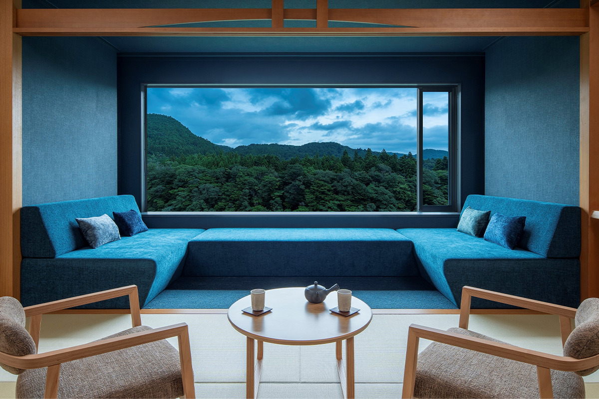
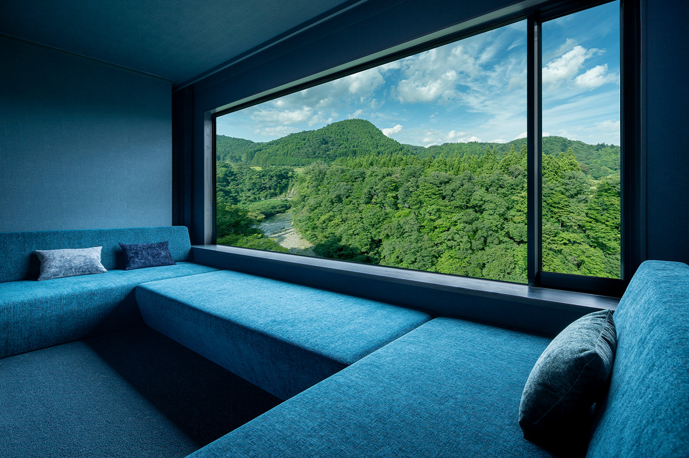
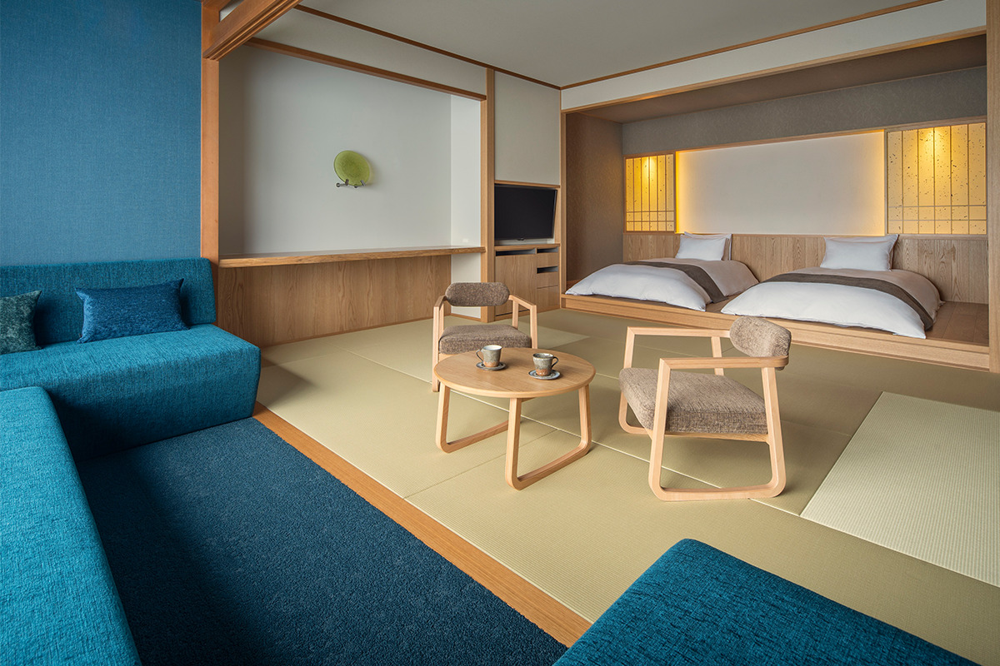
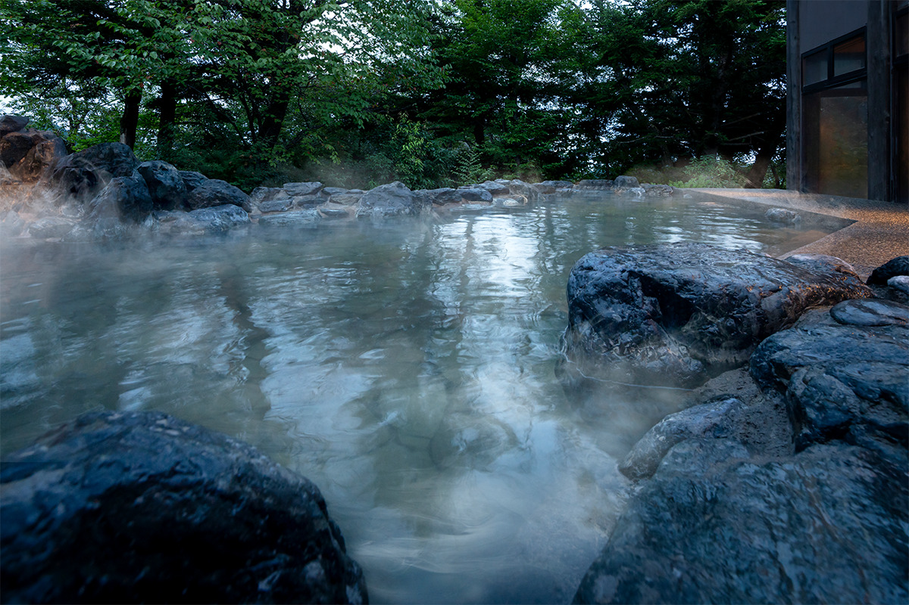
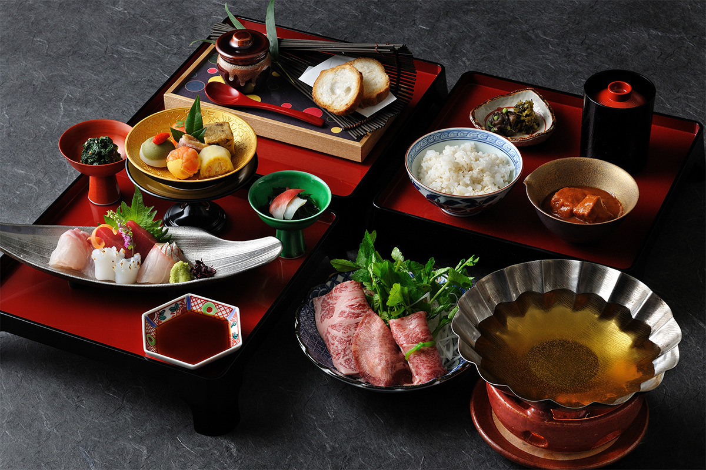

Префектура Мияги · онсэн Акиу · рёкан
KAI Akiu: онсэн-рёкан у реки Натори, где отдыхал Датэ Масамунэ

Онсэн Акиу называют «задней гостиной Сендая», это старый курорт совсем рядом с городом. В апреле 2024 года здесь открылся рёкан KAI Akiu, где о Мияги напоминает всё, от вида из окна до ужина.
Рёкан
Классика по-новому
KAI это сеть онсэн-рёканов компании Hoshino Resorts по всей Японии. Девиз сети звучит так: «Классика, но по-новому». 25 апреля 2024 года в онсэне Акиу, в префектуре Мияги, открылся двадцать третий рёкан сети, KAI Akiu.
Рёкан стоит среди леса, совсем рядом с чистой рекой Натори. Ущелье этой реки называется Райрайкё, и его когда-то описали как «лазурную бездну». Из этих слов выросла идея номеров в местном духе «Компэки-но ма», то есть «Лазурная комната». Все они смотрят на реку, а у больших окон стоят диваны глубокого синего цвета.

Мияги чувствуется в номерах и в мелочах. На письменном столе стоит работа в технике «Сэндай-гарасу», сэндайского стекла, а на сёдзи, бумажных раздвижных перегородках, нарисованы кокэси, местные деревянные куклы. Проект рёкана выполнило архитектурное бюро «Кодай».

Онсэн
Купание под шум реки
Вода в купальни поступает прямо из источников и не используется повторно. На территории рёкана два собственных источника, поэтому в крытой купальне два бассейна: «ацую» с горячей водой и «нурую» с тёплой. Под открытым небом устроена просторная купальня из камней, и из неё слышно, как шумит река.

Ужин
Трапеза по-княжески
Ужин подают в формате кайсэки, и задумка в том, чтобы он напоминал трапезу князя. Мияги стоит между морем и горами, поэтому в меню попадают лучшие продукты и с побережья, и из гор. Среди блюд есть рийет из бычьего хвоста с сэндайским мисо, а ассорти «Хораку-мори» приносят на подносе на ножках, как в старину подавали знати.

История
Онсэн императоров и князей
Считается, что история онсэна Акиу началась ещё в период Кофун (III–VII века). Здесь лечились императоры, а позже Датэ Масамунэ (1567–1636), первый князь Сендайского княжества. Масамунэ, прозванный «одноглазым драконом», был одним из самых ярких полководцев своей эпохи и основал город Сендай. История праздника Танабата в Сендае тоже ведёт к его временам. Ночь в KAI Akiu позволяет почувствовать, чем богата эта земля.
Ночь с ужином и завтраком стоила от 31 000 иен с налогами, сервисным сбором и налогом на купание в 2024 году. В рёкане 49 номеров, есть общие купальни, ресторан и лаунж.
KAI Akiu
- Адрес
- префектура Мияги, Сендай, район Тайхаку, Акиу-мати Юмото, Хиракура, 1
- Телефон
- +81 50-3134-8092 (центр бронирования KAI)
- Номера
- 49
- Цены / Вход
- от 31 000 иен за ночь с ужином и завтраком, включая налоги, сервисный сбор и налог на купание
- Заезд / выезд
- 15:00 / 12:00
- Как добраться
- на машине около 25 минут от съезда Сендай-Минами скоростной дороги Тохоку; от станции JR Сендай около 30 минут на автобусе